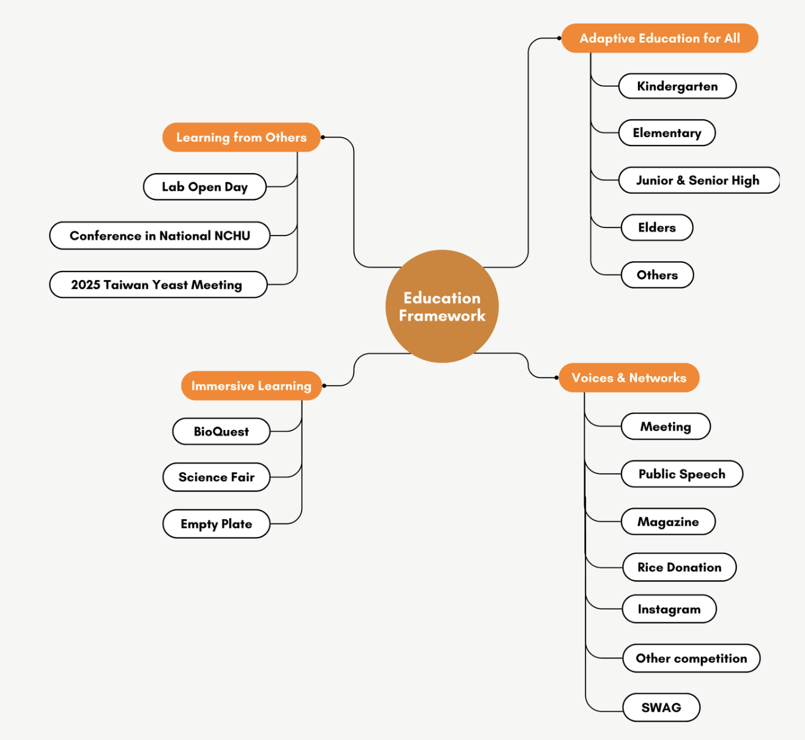

General Overview
Our education program focuses on three ideas often overlooked: synthetic biology, the black
soldier fly (BSF), and food waste. Synthetic biology is evolving at a rapid pace, yet many
people still associate it with some sort of chemical hazard. The black soldier fly larvae
(BSFL), which are useful in food waste management, are often dismissed because they look
intimidating. Food waste, despite being a global issue, seldom receives attention.
To change these views, our educational program offers lessons suited to different age groups and
communities. The materials that we designed are adapted for different age groups, public events,
and online platforms, making the topics more accessible. At our core, we aim to raise awareness
and change people’s perception of these challenges.
Education plan: 15
International education plan: 2
Total education activity:
Education has always been reciprocal. Reflecting on this idea, our education section is divided
into four parts: beginning with learning from others, followed by adaptive education, then
immersive learning, and finally, voices and networks. This sequence reflects the crux of
education: from gaining knowledge, to tailoring it, to making it engaging,
and finally, to
amplifying its reach.
1. Learning From Others
Before teaching others, we first focused on learning ourselves. This involved attending
conferences, open lab days, and expert talks to deepen our understanding of synthetic biology,
BSF, and general enzyme engineering. By listening to professors, researchers, and industry
stakeholders, we gained valuable information on how to shape both our project design and our
education strategies.
2. Adaptive Education
We adapted our teaching plans to accommodate different audiences from kindergarten students to
secondary level students. We also considered elderly learners and international learners in Sri
Lanka and Vietnam. Each program was designed with specific methods to match the learning
abilities and cultural context of the group. This approach ensured accessibility and
inclusiveness.
3. Immersive Learning
Our focus here was to create active learning experiences rather than passive listening. We
designed activities such as BioQuest and Empty Plate, as well as interactive events at school
science fairs. These programs encouraged students to play, solve problems, and actively
participate in their own learning.
4. Voices and Netweoks
Education also meant amplifying voices beyond the classroom. We launched podcasts, published
magazines, and created social media campaigns to reach broader audiences. These platforms turned
education into a dialogue, where we shared our ideas and also learned from the feedback of
others.

Learning From Others
Overview
To guide others effectively, we first focused on deepening our own understanding. To strengthen
our
project, we received guidance from experts and the research community. Academic conferences,
college
lab visits, and expert gatherings have expanded our knowledge in synthetic biology, enzyme
engineering, and BSF research. These experiences widened the scientific perspective of our team
and
introduced approaches that could be carried into our own project. In addition, informal
conversations with professors, researchers, and industry leaders gave us inspiration that later
guided both our lab work and human practices.
National Taiwan University (NTU) 2025 Lab Open Day
National Taiwan University (NTU), as the best university in Taiwan, stands as a key hub for
synthetic biology research. During the Lab Open Day, visitors are introduced to projects in
genetic engineering and related fields. For us, this event offered a chance to learn about the
latest techniques and strategies that might strengthen our project. The event also facilitated
connections with professors who went on to serve as external advisors to our project.
Conversations with professors revealed the challenges of biosafety concerns. For instance,
during a conversation with Professor Yang, a synthetic biology researcher at NTU, it washe noted
that some people still doubt the role of biotech in the future. Yet, he expressed confidence
that, as time approaches, a new generation would demonstrate how synthetic biology could
contribute to the world. He also shared advice on how to find and read academic papers more
efficiently, guidance that felt especially valuable for students like us who are still learning
in the field of research.
The Lab Open Day provided a clearer understanding of what a dry lab entails. Researchers
demonstrated their approaches, including the use of AlphaFold, Rosetta, and other computational
tools. For a high school team with limited access to such resources, seeing these methods was
especially advantageous. The experience showed us how dry lab work complements wet lab
experiments. Overall, the event offered models of practice that could be adapted to strengthen
our own project.


“Promoting Research Engagement in Black Soldier Fly Farming in Taiwan” Conference at National Chung Hsing University (NCHU)
We attended this conference introduced by one of our stakeholders, Dr. Chih-Qing Lin, from Kunyi Biotech Co., Ltd. This was a worthwhile opportunity as it is closely tied to our project centering on BSF farming and other related scientific research. Our participation gave us a clearer understanding of the latest findings on BSF and it enabled us to explore which directions researchers see as most promising for sustainable development. The conference also gathered many stakeholders and professors that created future collaboration opportunities for us.


The insights gained from the BSF conference directly impact our wet lab. We refined our design to emphasize cellulase-based pretreatment, targeting the breakdown of fibrous components in food waste before larval ingestion. Guidance from Dr. Jeffery K. Tomberlin, Professor of Entomology at Texas A&M University and Director of the National Science Foundation Center for Insect Biomanufacturing and Innovation, who specializes in BSF research, suggested the need to prioritize enzymes that can function in environments similar to compost piles, where temperature and pH fluctuate. The conference also emphasized the role of industry collaboration, motivating our team to expand stakeholder outreach on practical application within BSF farming systems, aligning with industry expectations and environmental goals.
Exploring Synthetic Biology at the 2025 Taiwan Yeast Seminar
We attended the 2025 Taiwan Year Seminar to help with our understanding of synthetic biology as a whole. The seminar discussed chromatin dynamics, mitochondrial function, nuclear envelope assembly, ER-associated degradation, sexual reproduction in yeast species. Yeast, similar to E. coli, is a widely used host organism in genetic engineering, while our project focuses on employing E. coli to produce enzymes at scale. By joining the meeting, we aimed to explore concepts that are new to us.
We learned that yeast is engineered to produce compounds such as biofuels and food supplements. A key takeaway for us was the process of how researchers optimize gene expression in yeast. The meeting also emphasized the challenges of building stable systems, including the need to balance metabolic loads and maintain the functions over cultures. Granted, as high school students, we could not fully understand the concept, but we did our best to learn and take notes on what we were not familiar with.


Although the content of the Yeast Conference was not directly linked to our project, it still offered helpful guidance. Hearing about yeast pathways reminded us of the importance of carefully selecting signal peptides and promoters to maximize expression levels in our own enzyme secretion system.
Adaptive Education
Overview
After receiving guidance ourselves, we felt a responsibility and an urge to share knowledge with others. “Education for all,” a principle rooted in Confucian thought, emphasized the importance of making knowledge accessible to everyone. With this idea in mind, our team adopted the “Backward Design” framework to ensure our program would be inclusive for audiences of different ages and backgrounds. This teaching method, introduced by Wiggins and McTighe in the book Understanding by Design, is an educational method that places learners at the center of course planning.We divided our target audience into distinct age groups: kindergarten, elementary school, junior high school, and the elderly. This separation of each group could receive materials tailored to their level of understanding.
The Three Stages of Backward Design:

Kindergarten Education
Objective
In our education plan for kindergarteners, the goal was to gently introduce the issue of food waste and show how BSF can help address it. At this age, children are naturally curious about familiar things (such as food) which makes the topic relatable and imaginable for kids. Building on that curiosity, we used metaphors heavily to demonstrate the abstract ideas. We presented BSF as “helpers” that “consume food waste and clean the Earth,” framing insects as small heroes for our planet.
Through simple narratives and illustrations, children were encouraged to see themselves as “mini-scientists”. Along the way, they were introduced to the idea that living organisms have different roles in nature, with BSF uniquely suited to tackle food waste.
Program
To engage our youngest audience, we transformed the idea of enzymes that help with food waste leftovers into a storybook adventure. The centerpiece was “Bob the Black Soldier Fly,” a comic-style character illustrated with bold colors and expressive faces. We created an eight-panel comic narrated by our team, allowing children to follow the storyline visually while listening to the narration.
We consulted kindergarten teachers experienced in working with young children, who advised us to rely on images with minimal oral explanation. As a result, we created Bob and his friends, E.coli Tim and Bacillus subtilis Sam, on an adventure. The comic introduced the core ideas of our project through engaging stories to children’s imaginations.


Comics of Bob the Black Soldier Fly
To add a hands-on element, each child colored or designed their own version of Bob, turning the
lesson into a personal creative activity. Together, the comic, illustrations, and presentation
formed a toolkit that helped kids understand the role of BSF without fear.


After the session, we gave out our own stickers as rewards for the Q&A. This made the kids more engaged, and the stickers also served as a reminder of what they had learned that day.


Special case for kindergarten education-Principal American School (pre-school)
In one of our kindergarten programs, the Principal American School (pre-school), required us to
use only English, even though the children’s first language was Mandarin. This made it
challenging to express scientific concepts at their level of English proficiency (merely five
years old!). We simplified our language use, relied more on illustrations, and incorporated
YouTube videos to support their understanding.


In sum, we designed three activities for the kindergarten students: a concise presentation, a drawing session where each child colored their own Bob, and storytelling through the eight-panel comic. Together, these activities combined visuals and narrative to make learning about BSF relatively accessible.
Elementary School Education
Objective
Our goal with elementary students was to introduce the BSF project in ways that connect directly
to their daily lives. But, unlike the kindergarten program, which relied heavily on storytelling
and imagination, this stage allowed us to go further: guiding elementary students into the world
of biology by linking scientific ideas to experiences they have already recognized. Since
Taiwan’s national curriculum introduces basic science concepts beginning in grade three of
elementary school (approximately 9 years old), we were able to frame our teaching in ways that
matched what students were already learning.


Also, recognizing that elementary school children are often more energetic and harder to keep
focused, we prepared a variety of group activities, such as interactive songs and board games,
to channel their energy while teaching.


Program
The centerpiece was our custom board game, Bob’s Life Adventure, where the students progressed
through the BSF’s growth stages, facing challenges and making choices connected to biology, such
as
finding nutrients or breaking down waste.


To bring the concept to life visually, we also produced a short Scratch animation showing Bob in
action, helping children see how BSF breaks down trash.
About Scratch
Scratch is a free, beginner-friendly programming platform widely used in Taiwanese elementary
schools as part of information technology classes. Instead of requiring written code, Scratch
uses visual blocks, like digital LEGO, to represent actions or settings for characters and
scenes.
For instance, purple blocks can make a character speak, move, or disappear, while blue blocks
control the background. This simplicity makes Scratch especially engaging for youth. By creating
a
Scratch video, we introduced our project and biology concepts through a platform children were
already
familiar with, allowing them to interact by controlling Bob and even adding their own creative
elements to the story, which deepened their impression of the session.


Our Scratch Video Story
The video introduces BSF as a solution to food waste, while also addressing one of the key challenges: breaking down fiber. We explained that through synthetic biology, E. coli (Tim) and Bacillus subtilis (Sam) can work together to produce endoglucanase, an enzyme (represented by a pair of scissors) that cuts down fiber and makes BSFL digestion more efficient.
Scratch video demo:
Exploring Biology Camp- LarVase x One For All
We organized a two-day camp for elementary school students called One For All, with the dual
goal of introducing synthetic biology concepts and cultivating leadership and presentation
skills. To make the camp possible, we recruited over 30 volunteers and brought the program
to Chang Keng Elementary School, a rural public school in Taiwan with no more than 100
students. The schedule was designed to balance science and personal growth. Each day
featured two hours of courses focused on our project and biology, while the rest of the time
was devoted to leadership-building activities like “escape room”, drama performing, and
other outdoor activities.


On the first day, we introduced students to the urgency of the food waste issue in Taiwan
and
presented the main idea of our project. To help them understand the seriousness of the
problem,
we showed pictures of common examples—school lunch leftovers, discarded night market food,
and
large bags of unsold vegetables from traditional markets. Afterward, students used clay to
recreate items they had seen in the images. This activity reinforced and encouraged them to
reflect on the value of food and the importance of reducing waste in daily life.


On the second day, we shifted the focus to biology. Taking the students’ level into account,
we
selected the topic of genes and heredity. The lesson introduced concepts such as dominant
and
recessive traits as well as the basics of blood types. Our main activity was “Little Gene
Detective”. Students were shown pictures of dogs of different breeds and asked to write down
their observed features on separate notes. These notes were then placed into a “mystery
box,”
from which each student randomly drew traits to design their own imaginary pet. Through this
process, they experienced how genetic traits are inherited randomly and how they shape
appearance. The activity was aimed to reinforce their understanding of genetics and also
encourage their collaboration skill when analysing the different appearances of dogs.


Elementary School Education slides:
Junior & Senior High School Education
Objectives
As we transitioned to junior and senior high school students, our goal shifted towards
promoting a deeper understanding of synthetic biology. Topics included gene cloning and the
integration of lab and hardware technologies. Certainly, we explained the reasoning behind
our focus on BSF and provided information about its unique life cycle.
Recognizing that a simple introduction would not be enough to engage older students, we also
shared our own lab experiences. This session became a vital part of our project design,
capturing student interest by walking them through key concepts such as extracting genes
from organisms, amplifying DNA using PCR, and engineering genes in different ways. Besides
synthetic biology, we emphasized the importance of sustainability and demonstrated how our
work connects to the United Nations Sustainable Development Goals (SDGs).
Methods
For junior and senior students, we designed materials that matched their ability to engage
with greater detail. One was a custom teaching card deck, styled like poker cards, with each
card featuring a graphic from our project. These cards supported group activities and memory
challenges, helping students retain abstract terms more easily.
We organized two games using our custom teaching card deck:
1. If the facilitator called out “3 DNA times 5 E. coli plus 10 enzymes,” the player would
need
to quickly find them and do the math. The challenge was not as easy as it sounds, which made
the students even more engaged in the activity.
2. Each student received one card representing part of the elements of our project, such as
DNA, E. coli, enzymes, and food waste. The facilitator would then announce a “mission,” for
example, “2 DNA plus 3 E. coli to produce one enzyme,” or “1 enzyme plus 2 food waste to
complete decomposition.” Students had to quickly search through each other’s cards to
assemble the correct combination.
Junior & Senior High School Education Slides:
Elders Education
Objective
For the elders, our teaching method differed from that used with students. Since their
familiarity with scientific concepts was generally lower, we adopted a style closer to our
kindergarten program. We used simple, image-based slides instead of text materials without
overwhelming detail. To make the session more interactive, we apply the same card game, in
which each character represents a different element in our project.


Program
It was not an easy task to take care of 30 elderly participants with only a few members of
our
human practice team. Before the program, we consulted the nursing home staff to learn how to
look after them properly. From these conversations, we discovered that their cognitive
abilities
were roughly comparable to a 7-year-old kid, though with one important difference: most of
them
could barely understand Mandarin and were more accustomed to speaking in traditional
Taiwanese.
For us, a group of Gen Z students used to communicating mainly in Mandarin, this language
barrier became one of the main challenges since only a few of us could attempt to speak in
Taiwanese.
Even so, we didn’t give up. We practiced, rewrote our materials, and ensured that everything
was
clear. Eventually, we confirmed the teaching date and visited several local community
centers
where many elders gathered. They were amazed at how we used metaphors and simple
visualization
to explain concepts that initially seemed difficult. Ms. Chang and Mr. Chien, who were
nearly 90
years old from Yong He Nursing Home, admitted it was their very first time receiving
teaching,
as they had never had the chance to attend school before. In a sense, we were offering a
first
experience of education to those who had missed such opportunities earlier in life.
We were quite nervous at first, unsure of how the elderly would react to our presentation.
But
as we spoke, we noticed them listening attentively and smiling throughout the activity. Some
shared personal stories about food and how life used to be in their younger days, a time
when
resources were scarce and poverty made every piece of rice treasured. They told us they were
proud of us and glad to see young people caring about the environment.


Teaching Materials
In many of the participants, some had vision difficulties, and some preferred Traditional
Taiwanese over Mandarin. To address these needs, we redesigned our materials with larger
fonts,
traditional Taiwanese characters, and bigger illustrations that explained food waste and BSF
in
simple steps. For those with eyesight or hearing difficulties, we adapted the content into
simpler oral storytelling with the aid of microphones. Moreover, recognizing that not
everyone
was comfortable with the pace of the lesson, we left a gap for a break for them to discuss
and
chat with us.
These adjustments transformed the session into a link between two divergent generations. We
cannot guarantee that every elder fully understood our project, but hopefully, this kind of
experience encouraged them to stay curious, leaving a little yet lasting impact.
Elders Education slides:
International Education
9-Day Educational Trip in Sri Lanka
Located on the southeastern tip of the Indian subcontinent, there is a country where
students
have limited insight into synthetic biology. To help resolve this lack of unexplored
knowledge
and unveil the mission to spread synthetic biology as far as we could, we went to Sri Lanka
for
nine days.
This country has unresolved issues with resource limitations, especially in rural schools.
There
is a shortage of qualified teachers and outdated curricula that do not foster modern skills.
The
division between the rich and the poor is visible to the naked eye. This ongoing economic
crisis
has led to one of the world’s biggest issues: inequality in education. Being part of the
global
community, we want to help through a series of lectures that include information on
biodiversity, basic biology concepts, and the idea of the food chain. The reason that we
chose
these biological concepts instead of many other ideas is that our target audience is a group
of
young pupils. Given these circumstances, and assuming that they have limited prior knowledge
on
the given topic, we choose to start from the basics and add information gradually.


We taught the kids through the assistance of English vocabulary, music, dancing, and
graphics. The structure of each class is backed by Team-Based Learning, in which they work
in teams and focus on collaboration to discuss the answer to each question posed by our
team. We understand that the traditional way of lecturing no longer fits the needs of the
21st-century students, and with that, we adopted this more efficient way of teaching.
In the end, we conclude that the result of the class was a success as students were able to
fully incorporate the knowledge that they had learned in class and connect it to their
personal experience. Some related personal instances of raising organisms back home, sharing
their ideas as well as feelings towards the subject. Such outcomes indicate that the class
enhanced their knowledge about STEM and instilled curiosity to discover the interesting, yet
concealed, world they live in.


Expanding Access to Biotechnology Education in
Rural Vietnam